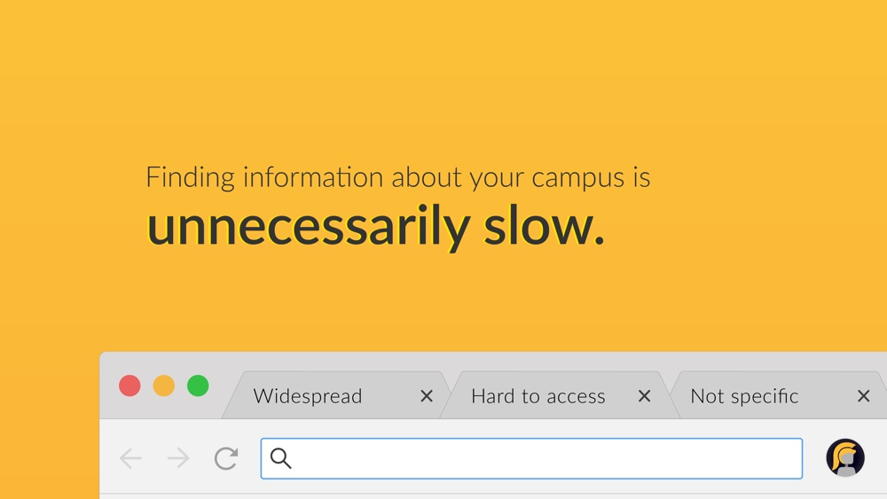
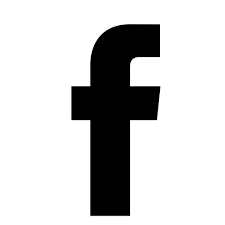
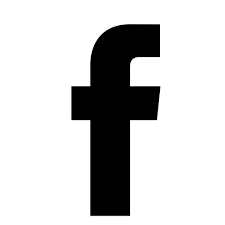

Overview
My team (Will Durkee, Sam Breck, Justin He) and I started Tommy Bot in Fall 2016 in Lavalab, USC's startup incubator. We were inspired to start this project because as freshmen, Justin and I were lost all the time, and we wanted to create something that helped us get around. Our collective goals and strengths helped us scope our problem and decide on a product.
The Goal & Scope
We wanted to have the experience of taking a project from start to finish, or in other words, from idea to end user. Whatever problem we chose to tackle, it had to be small enough in scope that we’d be able to execute a product and run several iterations of it over the course of just one semester. At the time, we were a team of sophomores and freshman. It made the most sense to tackle a problem that we felt as students, and to create a product whose user profile matched ours and a user base that we could directly access. Those two factors helped us decide on Tommy Bot.
Graphics
Tommy Bot was the time my design skills were put to the test. Having just taken my first Illustrator class a week before our first meeting as a team, taking on brand identity, product design, and marketing for one project was daunting. It's safe to say that my design know-how has grown in tandem with Tommy. With three developers on the team, I took on a design, marketing, and administrative role to make sure goals were met.
Brand Identity
The main challenge in creating a brand for Tommy Bot was to find a way to keep a neutra
I wanted to create a brand for Tommy Bot was neutral and relatable while simultaneously allowing room for students to engage with the brand as a mascot and get excited. The initial version we used in our beta kept USC’s yellow but tried to deviate from the campus’ identity with the grey (first image). The current redesign (second image), which launched in the fall, makes use of subtle gradients for added depth and rounded corners for a more cohesive look.


Marketing flyers & videos
Flyers were used to reach potential users over Facebook, talking to students, and flyering around campus. You can also find some of our videos on Facebook. Our first beta launch video is here , our updates video here, and our Fall 2017 launch video here. I used a mix of After Effects, Final Cut, and Illustrator to bring together the graphics & content.

Iovine and Young Prize
Pitch Deck
Most recently, I put together a pitch deck that helped the team win the 2017 Iovine and Young Prize, securing $10,000 to continue work on our project. The prize is awarded yearly “for exceptional creativity and feasibility.” The sample of the deck (below) introduces our new branding while outlining our problem space, product, competition, and key metrics. The Keynote presented included more engaging GIFS and short videos.



Future
Our Vision
We’re looking to expand our campus chatbot model to different colleges across the US, and to turn Tommy Bot (or Bruin Bot, Tree Bot, etc.) into every student’s first and most reliable friend on campus. It’s so overwhelming to come to a new school and not know where anything is or what’s happening, and chatbots are a great way to access that information in a personal way.
Why I believe entrepreneurship is important
Entrepreneurship, in our case, gave us agency to quickly solve problems we saw, especially in slow moving, established spaces. Tommy Bot was such a quick fix to the friction we felt in our daily lives, and if we had waited for USC to roll out a comprehensive app or website that did the same, we would probably already be seniors (no shade to USC, it’s obviously much more difficult to create and approve products in such a large organization).
Entrepreneurship is a great way to make an impact, to take initiative within your community and tackle a problem you care about or to bring one of your cool new ideas to life — it’s about making things happen without having to play by the rules (at least at first).
The Team
It's been a great learning experience to work on Tommy Bot this past year with this team. We all have varied interests and different backgrounds but mesh really well — all of our meetings are a blast. I can't wait to see where we all go, and I can confidently say that I wouldn't have done this with anyone else. From left to right, Sam Breck, (me), Justin He, and Will Durkee.

Press
Got a question? Ask Tommy Bot
The Daily Trojan
by Terry Nguyen
It is a confidently stated slogan from USC’s first ever chatbot, followed by a sly wink emoticon comprised of a semicolon and a parenthetical. “Tommy knows best,” the slogan says.

Campus chatbot reveals latest updates
The Daily Trojan
Baylee Schlichtman & Terry Nguyen
As the fall semester kicks off, Tommy Bot, the University’s first campus chatbot, is updated and ready for use by the USC community.
Beyond LavaLab: Tommy Bot
Lavalab
Beyond LavaLab takes a look at what some of our teams have done once they've gone through LavaLab's curriculum.
 
